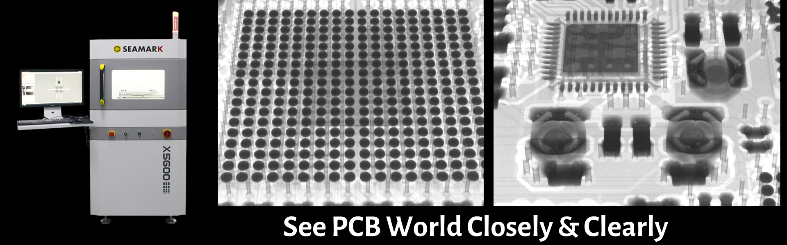

<div style="line-height:1.7;color:#000000;font-size:14px;font-family:Arial"><div style="line-height:1.7;color:#000000;font-size:14px;font-family:Arial"><div style="line-height:1.7;color:#000000;font-size:14px;font-family:Arial"><div style="line-height:1.7;color:#000000;font-size:14px;font-family:Arial"><div style="line-height:1.7;color:#000000;font-size:14px;font-family:Arial"><div style="line-height:1.7;color:#000000;font-size:14px;font-family:Arial"><div style="margin:0;">Good day,</div><div style="margin:0;"><br></div><div style="margin:0;">I hope this mail find you in perfect condition.</div><div style="margin:0;">Here to introduce you our X5600 mini x ray inspection machine.</div><div style="margin:0;"><br></div><div style="margin:0;"></div><p style="margin: 0;"><br></p><div style="margin: 0;"><u><b>What's the application?</b></u></div><div style="margin: 0;">1. EMS Company, SMT Factory.</div><div style="margin: 0;">2. Test lab.</div><div style="margin: 0;">3. Repair center/ shop.</div><div style="margin: 0;"><br></div><div style="margin: 0;"><b><u>What's the usage?</u></b></div><div style="margin: 0;">1. Support to inspect different size, thickness, material electronics, to check the internal condition without damage it. (bga, connector, wires, voids etc)</div><div style="margin: 0;">2. Support inspect, measure, marking, analyse function. (Different tools for different requirements)</div><div style="margin: 0;">3. Improve the production quality control.</div><div style="margin: 0;"><br></div><div style="margin: 0;"><u><b>What's the advantage from it?</b></u></div><div style="margin: 0;">1. Small size.</div><div style="margin: 0;">2. World class supplier support for this machine. (Japan Hamamatsu Photon, Korea Rayence, America Dalsa)</div><div style="margin: 0;">3. Maintance free, no extra charges.</div><div style="margin: 0;">4. Long life span (8-10 year under normal working condition)</div><div style="margin: 0;">5. VIP clients verified. (Foxconn, Flextronics, Delta, Huawei, ZTE, BYD etc)</div><div style="margin: 0;">6. 1/4 to 1/6 of western brands price, 90% of the performance.</div><div style="margin: 0;"><br></div><div style="margin: 0;">Feel free to get back to me for more details.</div><div style="margin: 0;">Best regards,</div><div style="margin: 0;">Noda</div><div style="margin: 0;"><span style="font-size: 15px; font-family: &quot;times new roman&quot;, times;">-----------------</span></div><div style="position:relative;zoom:1"><div><span style="font-family: &quot;times new roman&quot;, times; font-size: 15px;">Sales Manager</span></div><div><span style="font-family: &quot;times new roman&quot;, times; font-size: 15px;">HP/WhatsApp/Wechat：+86 135 4421 6017</span></div><span style="font-family: 'times new roman', times; font-size: 15px;">Seamark ZM Technology Group（H.K.）Company Ltd</span><br><span style="font-family: 'times new roman', times; font-size: 15px;">A</span><span style="font-family: &quot;times new roman&quot;, times; font-size: 15px;">dd: Building 10, Huaide Cuihai Industrial Park, Bao'an,Shenzhen,China 518103&nbsp;</span><div></div><div style="clear:both"></div></div></div></div></div></div></div></div>